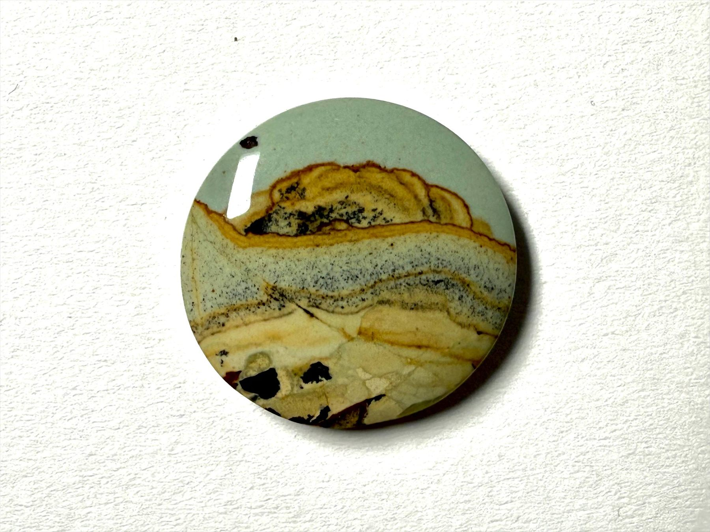
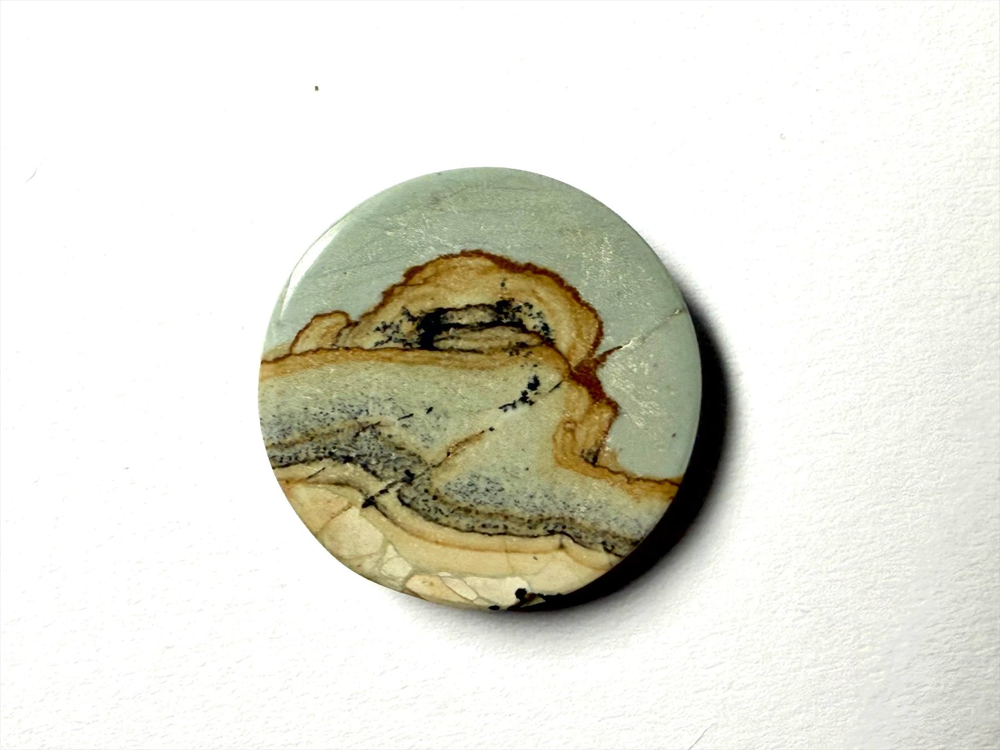
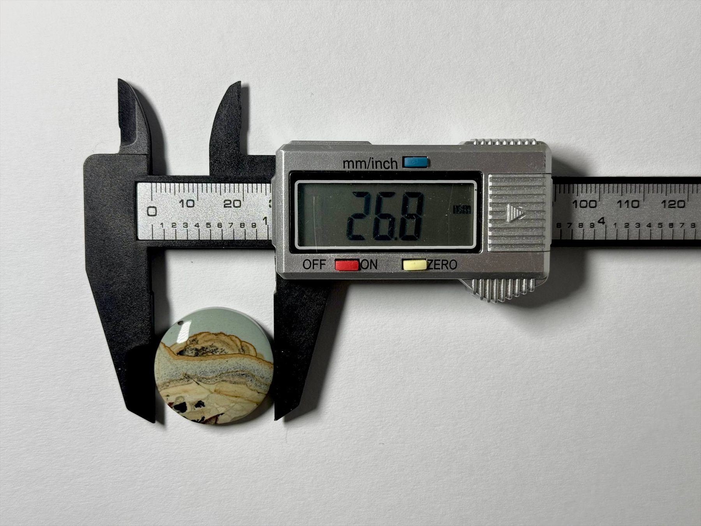

Click image to exploreTHE ROSINO COLLECTION
Sandstone Horizon
Sandstone Horizon is a jasper cabochon with the calm, layered look of a desert horizon. Soft sand tones, warm gold bands and pale, sky-green shades stack naturally, just as the earth set them over time. It feels like a small landscape you can hold – a quiet scene with its own depth and texture, suited for display or a minimal, sculptural piece of jewelry. size 26.8mm
A closer look.


